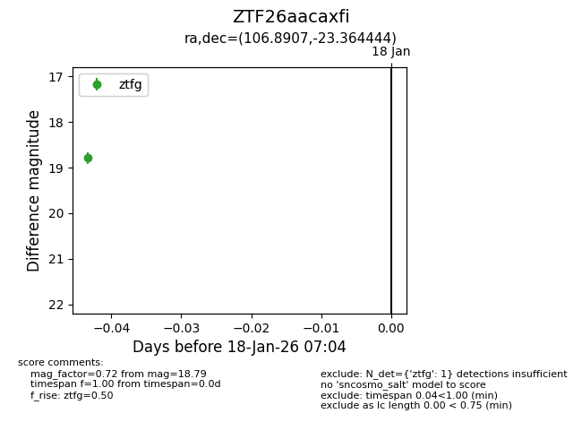
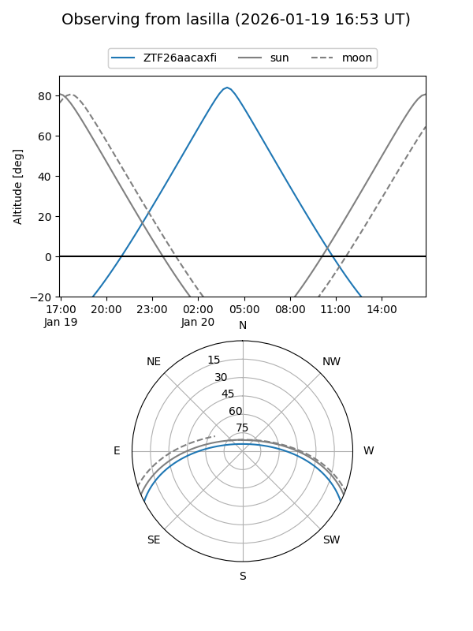
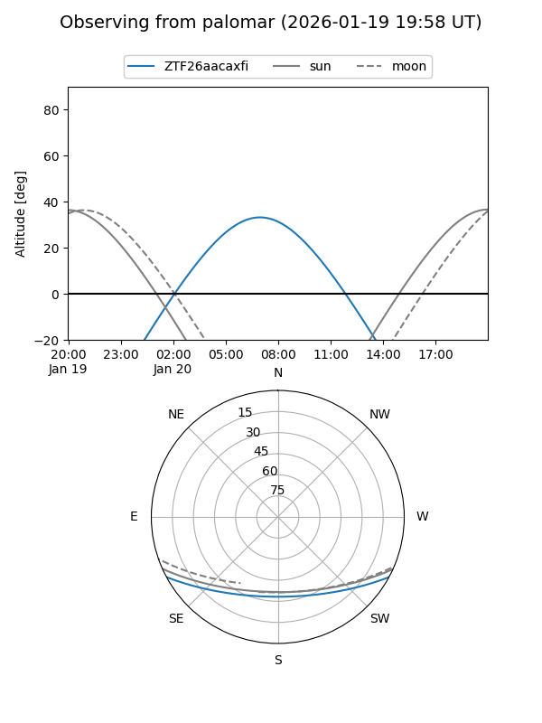

ZTF26aacaxfi
Target ZTF26aacaxfi at 2026-01-18 07:05
Aliases and brokers:
FINK: link
Lasair: link
ALeRCE: link
alt names
ZTF26aacaxfi (ztf,fink_ztf)
Coordinates:
equatorial (ra, dec) = 106.8907,-23.36444
equatorial (HMS+DMS) = 07:07:33.76,-23:21:52.00
galactic (l, b) = (235.5956,-7.08826)
Flags:
Photometry:
last ztfg=18.79
1 ztfg detections
Lightcurve

Visibility


Additional plots